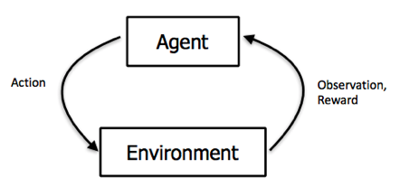

A friendly introduction to Machine Learning
Hello everyone! In case we haven't met yet, I'm Tristan and today I'm going to give you a taste of machine
learning.
This will be as non-technical as I can make it, there won't be any code or math, but some of that stuff might
slip
out of my mouth so please ask questions if you don't understand and I'll explain some more.
What is machine learning?
Machine learning, artificial intelligence, genetic algorthims are all part of the same group of systems. that
is
defined by their ability to learn or improve as they operate.
A machine is said to learn from experience E with respect to some class of tasks T and performance measure P if
its
performance at tasks in T, as measured by P, improves with experience E
And this is a very broad definition, because it can be applied to all sorts of things. For most of the
examples
I'll be talking about, we will be showing instances of supervised machine learning which
💻
🔢
And you are hearing about it more and more today because of a lot a micro and macro trends, but some of the
macro
level events happening that make machine learning more accessible. The first of which is computers, constantly
getting faster and more performant. If you think back to state of the art technology a decade ago, ther is
stuff
tens of times more powerful.
Source: CS 294 Deep Reinforcement Learning (UC Berkeley)
Training methods
Button mashing
Demo!
random-agent-sonic.py
Training methods
Random Repetition
Do a random action
See if the reward is better
doesn't even bother looking at the screen.
Demo!
jerk-agent-sonic.py
Training methods
Q Learning
Your browser does not support the video tag.
Your browser does not support the video tag.
DATA!
Image: Barron's/Thomas
Hedger
https://www.blog.google/products/gmail/subject-write-emails-faster-smart-compose-gmail/
What does this have to do with me?
Or maybe you have a self storage facility and you want know how many people are going to be there this
weekend, or
how long we should expect it to take to be fully leased.